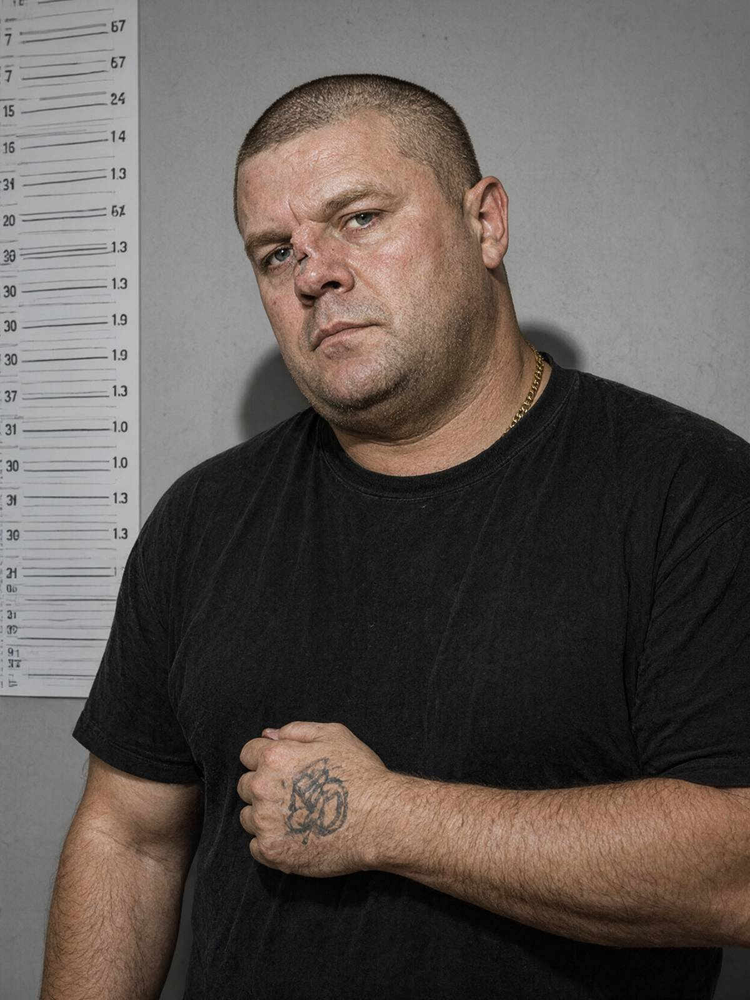
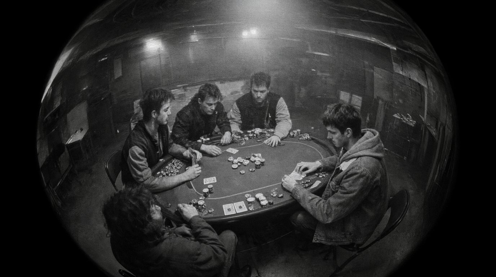
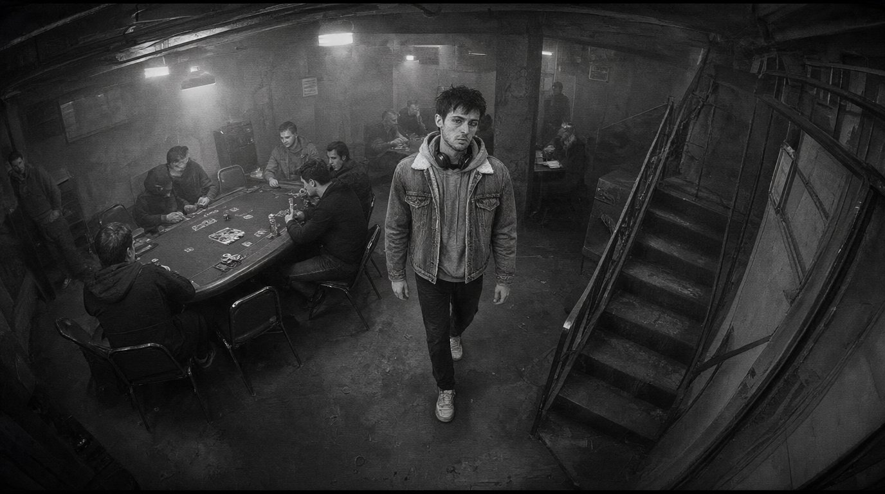

Доповідаю, що 13.11.2024 з 10:00 до 11:30 на підставі звернення до чергової частини, а також відомостей з оперативного обліку, мною, дільничним офіцером поліції ст. лейтенантом поліції Ковалишином Р.Я., проведено перевірку адреси: м. Львів, вул. Мулярська, 3 (цокольний та підвальний поверхи будівлі).

За адресою розміщується кальян-бар «Дим», зареєстрований на фізичну особу-підприємця Бойка Ростислава Степановича. Заклад працює з 17:00 до 02:00. Під час перевірки в залі відвідувачів порушень не виявлено. Вхід до підвального приміщення обмежено — за зачиненими дверима з написом «Службове».
14.11.2024 у межах іншого кримінального провадження (ст. 203-2 ККУ, група слідчих Галицького ВП, ухвала слідчого судді від 13.11.2024) на вказаній адресі проведено обшук. У підвальному приміщенні виявлено обладнання для організації азартних ігор. Вилучено: записи систем відеоспостереження за 12.11.2024 (жорсткий диск регістратора), зошит обліку з рукописними записами.
Зважаючи на зазначене, а також на запит старшого слідчого СВ капітана поліції Стасюка О.М., надаю фотознімки з відеозаписів і сторінки зошита, зроблені в ході ознайомлення з матеріалами (копії додаються).

2024/11/12 19:04:12 CCTV-02 ДИМ
2024/11/12 23:21:47 CCTV-02 ДИМІнших відомостей щодо зазначених осіб у межах перевірки не встановлено. Про результати повідомлено слідчого.